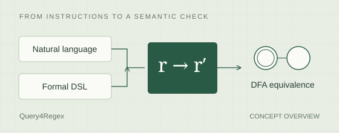
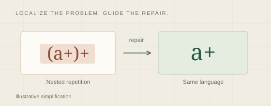
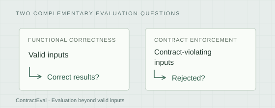
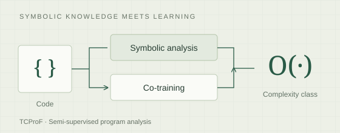

01Verification & safety
Can we check what AI produces?
Formal specifications, verifiable transformations, and symbolic guidance for more reliable generation and repair.
Postdoctoral ResearcherLinköping University
Trustworthy AI,
grounded in language and structure.
I am a postdoctoral researcher in the Trustworthy Systems Group (TSG) at Linköping University. Working with Simin Nadjm-Tehrani, I contribute to RESIST, a research center for resilient and secure AI systems.

Research center
RESIST Resilience and Security for Trustworthy AI SystemsNow at Linköping
Today's language models read untrusted content and act through tools, so trusting them takes more than a better filter. At Linköping, as part of RESIST, I work where LLM verification meets LLM security: checking what these systems produce, understanding how they fail under attack, and recognizing when they should refuse.
Research directions
My work connects formal language theory with modern AI: evaluating what language models can reliably do, checking the correctness of their outputs, and improving how they reason about programs.
Formal specifications, verifiable transformations, and symbolic guidance for more reliable generation and repair.
Structure-aware methods for code analysis, complexity prediction, and evaluation beyond functional correctness.
Formal grammars, automata, and symbolic learning as foundations for understanding language and computation.
Selected work

Query4Regex: Verifiable Regex Transformation through Formal Operations from NL and DSL Queries
Evaluating regex transformations with formal operations and deterministic finite automata equivalence checks.

Repairing Regex Vulnerabilities via Localization-Guided Instructions
Localizing vulnerable subpatterns symbolically, then guiding language models to repair regular expressions.

ContractEval: A Benchmark for Evaluating Contract-Satisfying Assertions in Code Generation
Evaluating whether generated code enforces input preconditions, beyond correctness on valid inputs.

* Equal contribution. Illustrations describe research concepts; see each paper for methods and results.
Updates
I joined Linköping University as a postdoctoral researcher in the Trustworthy Systems Group, within the Cybersecurity division, working with Simin Nadjm-Tehrani as part of RESIST. About RESIST
ContractEval, a benchmark for checking whether generated code enforces its input contracts, appears in Findings of ACL 2026. Paper
Three papers at EACL 2026: Query4Regex in Findings, and work on regex vulnerability repair and regex minimization in the main conference. Read the papers
I received my Ph.D. in Computer Science from Yonsei University, advised by Yo-Sub Han. Background
EnCur, our work on curriculum-based in-context learning for code time complexity prediction, appears in Expert Systems with Applications. Paper
I presented work on the sparsity of M-unambiguous languages at DLT 2025. Conference program
TCProF, our semi-supervised framework for time-complexity prediction, was presented at NAACL 2025. Paper
Background
Linköping University · TSG / RESIST
Yonsei University
Advisor: Yo-Sub Han
Bachelor’s degree · Yonsei University